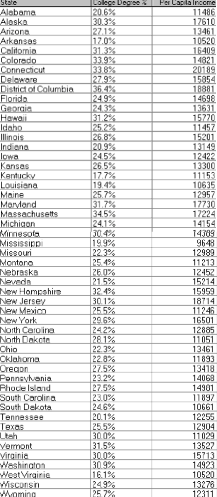
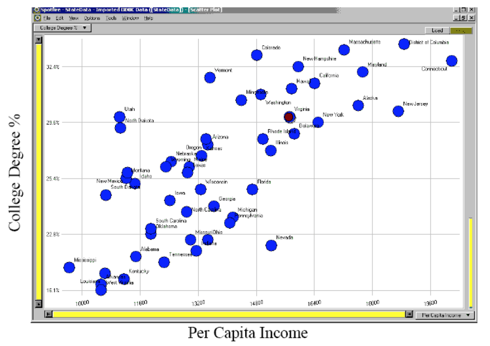
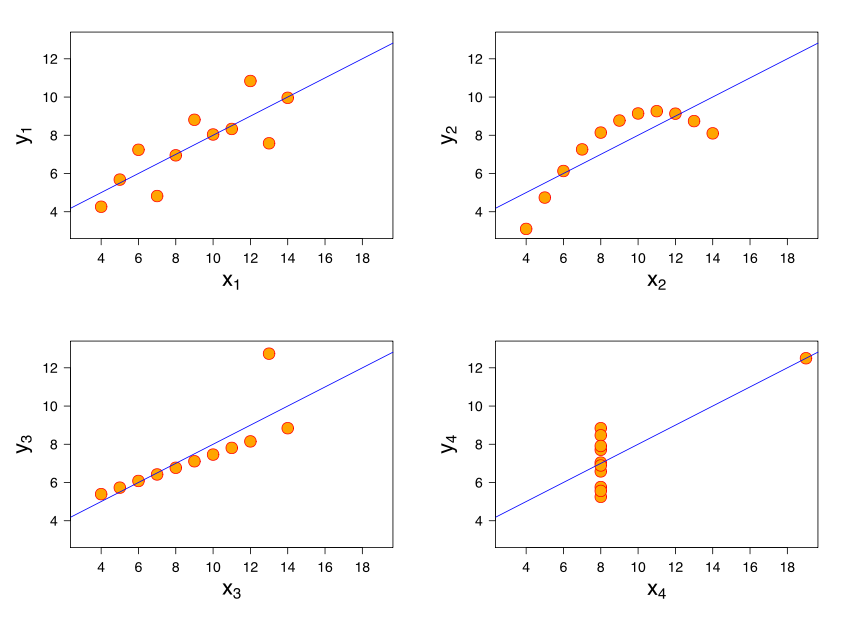
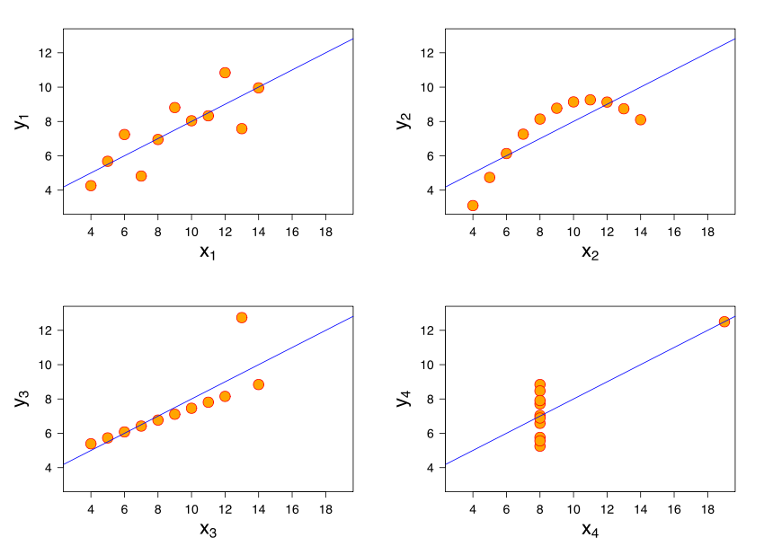
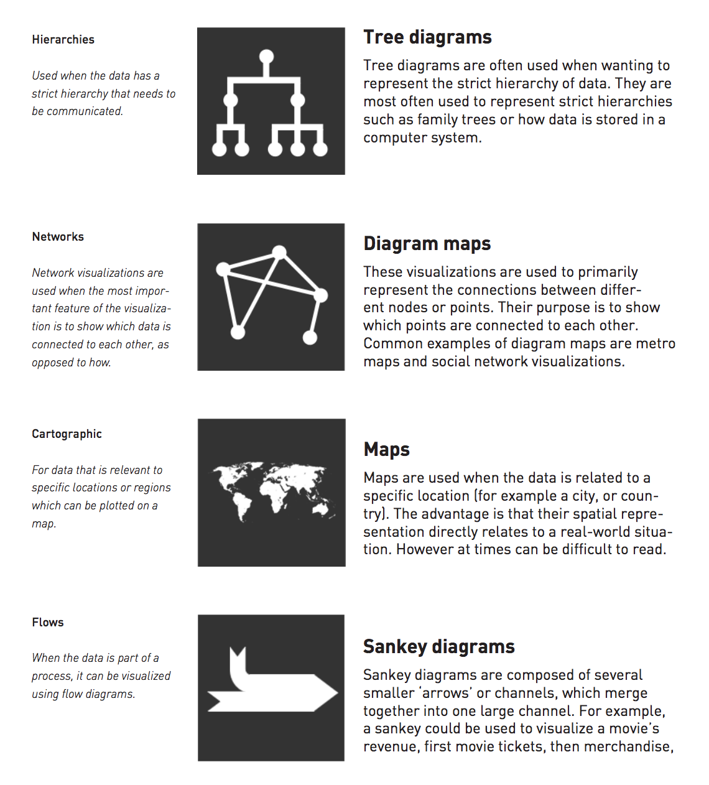
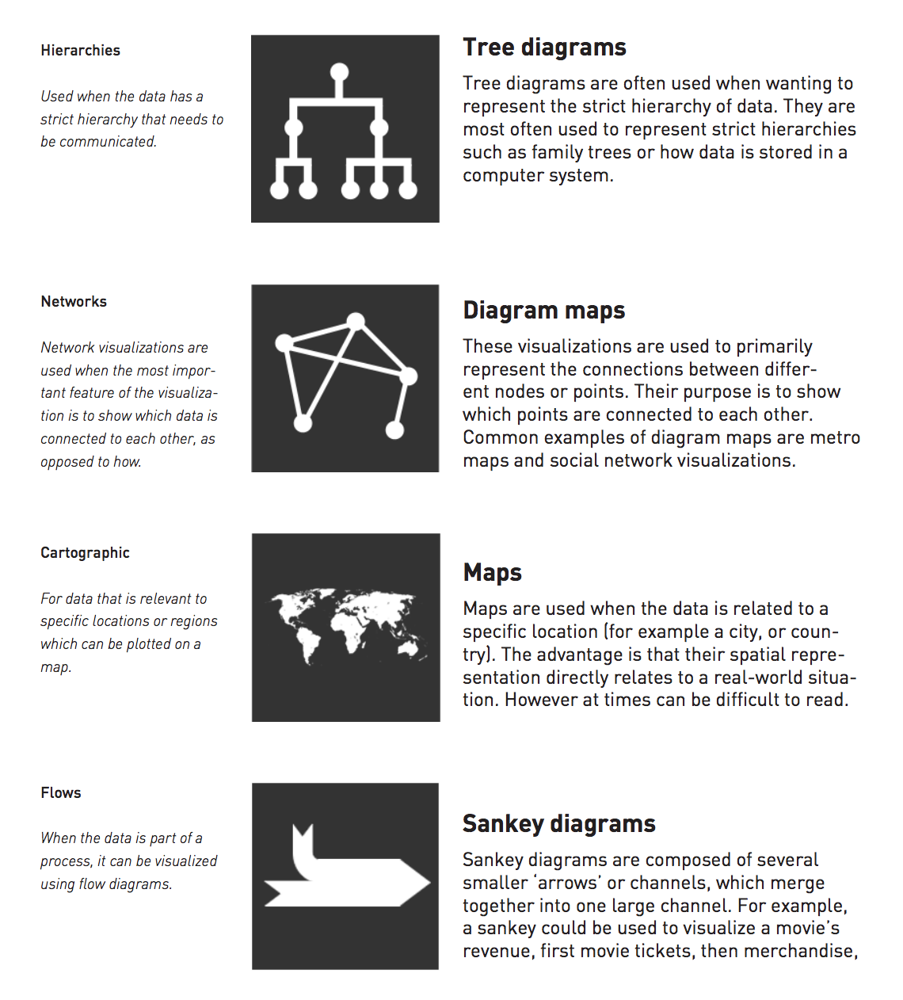
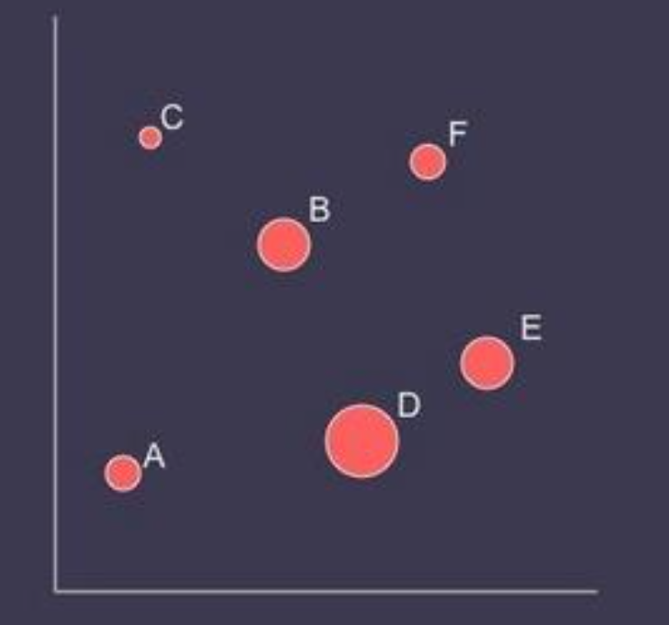

(source)
(source)
What is data visualization?
- The visual representation of information
- Goals of data visualization
- Effective, clear communication of information
- Stimulate viewer engagement
- Exploratory data analysis
Advantages of visualization
- With many numbers and large datasets, need an efficient way to understand a vast amount of data
- The human visual system is the highest-bandwidth channel to the human brain
Example: Given the income, college degree percentage of each state, try answering the following questions with either a table and a graphic representation. Which method is better in answering the questions?
- Which state has highest income?
- Relationship between income and education?
- Outliers?
 
(Example by Marti Hearst) - Graphs reveal data that statistics may not
Example: Anscombe's quartet
I II III IV x y x y x y x y 10.0 8.04 10.0 9.14 10.0 7.46 8.0 6.58 8.0 6.95 8.0 8.14 8.0 6.77 8.0 5.76 13.0 7.58 13.0 8.74 13.0 12.74 8.0 7.71 9.0 8.81 9.0 8.77 9.0 7.11 8.0 8.84 11.0 8.33 11.0 9.26 11.0 7.81 8.0 8.47 14.0 9.96 14.0 8.10 14.0 8.84 8.0 7.04 6.0 7.24 6.0 6.13 6.0 6.08 8.0 5.25 4.0 4.26 4.0 3.10 4.0 5.39 19.0 12.50 12.0 10.84 12.0 9.13 12.0 8.15 8.0 5.56 7.0 4.82 7.0 7.26 7.0 6.42 8.0 7.91 5.0 5.68 5.0 4.74 5.0 5.73 8.0 6.89 Simple summary statistics are all identical for four datasets However, the four datasets vary considerably when graphed

However, the four datasets vary considerably when graphed

Data visualization process
- Classify datatypes
- Nominal (ex: fruits - apples, oranges, ...)
- Operations: ==, !=
- Ordinal (ex: quality of meat - grade A, AA, AAA, ...)
- Operations: ==, !=, <=, >=
- Quantitative
- Interval (ex: dates - May 1st, 2015, location - LAT 38.9 LON 127)
- Only differences may compared
- Operations: ==, !=, <=, >=, -
- Ratio (ex: length - 160cm)
- Origin is meaningful
- Operations: ==, !=, <=, >=, -, /
- Interval (ex: dates - May 1st, 2015, location - LAT 38.9 LON 127)
- Nominal (ex: fruits - apples, oranges, ...)
-
Map datasets to visual attributes that represent data types most effectively (also known as data encoding)

-
Comparisons

(Source: Nathan Yau, Data points)
Data visualization types

 

(Source: Joel Laumans, An introduction to visualizing data)
Visualizing multi-dimensional data
Univariate data (1D)
- Line plot

- Bar plot

- Box-and-whisker plot

Bivariate data (2D)
- 2D scatter plot

Trivariate data (3D)
- Use 3D scatter plot

- Map two variables [x, y] in 2D space + Map third variable [z] with another visual attribute (ex: color, shape, size)

Multivariate data (>3D)
- How many variables can be depicted in a image?
"With up to three rows, a data table can be constructed directly as a single image. However, an image has only three dimensions. And this barrier is impassible." -- Bertin
In-class Practice: Worldwide Disasters (1900-2008)
- Visualize with the data below

- Evaluation
- Expressiveness
- Do the mappings show the facts and only the facts?
- Are visual mappings consistent? (e.g., respect color mappings)
- Effectiveness
- Are perceptually effective encodings used?
- Are the most important data mapped to the most effective visual variables?
- Cognitive Load (Efficiency)
- Are there extraneous (unmapped) visual elements?
- Data Transformation
- Are transformations (filter, sort, derive, aggregate) appropriate?
- Guides (Non-Data Elements)
- Descriptive, consistent: Title, Label, Caption, Source, Annotations
- Meaningful references: Gridlines, Legend
- Expressiveness
References
- http://selection.datavisualization.ch/
- Chart and image gallery: 30+ free tools for data visualization and analysis
- NYT the year in graphics: 2012
- NYT the year in graphics: 2014
- Many contents in courtesy of Cecilia Aragon and Maneesh Agrawala
- 빅데이터 분석 시각화 분석 : 1장 시각화정의 2장 프로세스